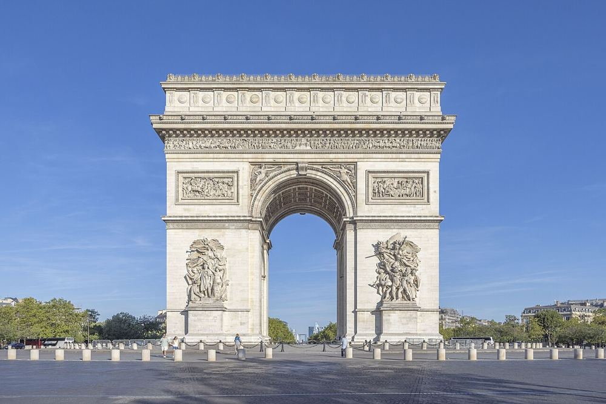

Arc de Triomphe
Gratuit pour les moins de 18 ans. Près de 300 marches mènent à la terrasse et à sa vue sur les Champs-Élysées : à réserver aux enfants bons marcheurs.


Ce que les enfants vont aimer
En haut, douze grandes avenues partent dans toutes les directions, comme une étoile.
Y aller
Place Charles de Gaulle, 75008 Paris
Métro Charles de Gaulle-Étoile (lignes 1, 2, 6), accès par le passage souterrain
Le plus calme : à l'ouverture ou au coucher du soleil. Accès par le passage souterrain, jamais en traversant la place.
Autour du lieu
Toilettes, tables à langer, aires de jeux, eau potable, pharmacie et station les plus proches, avec le temps de marche.
- Toilettes : Toilettes publiques, à 3 min à pied (110 m) · payant
- Toilettes : Toilettes publiques, à 4 min à pied (140 m) · gratuit · accès fauteuil
- Table à langer : Toilettes avec table à langer, à 23 min à pied (900 m) · gratuit · accès fauteuil
- Table à langer : Toilettes avec table à langer, à 23 min à pied (900 m) · gratuit · accès fauteuil
- Aire de jeux : Aire de jeux, à 14 min à pied (550 m)
- Aire de jeux : Aire de jeux, à 17 min à pied (640 m)
- Eau potable : Point d'eau potable, à 5 min à pied (180 m)
- Pharmacie : Pharmacie Derhy, à 5 min à pied (190 m)
- Station : Charles de Gaulle-Étoile, à 1 min à pied (50 m) · accès partiel signalé
D'après OpenStreetMap, non vérifié sur place.
À combiner dans la journée
Tour Eiffel
Au premier étage, le sol est en verre : tu peux regarder tout en bas sous tes pieds.
À 1,7 km, en transports · 0–17 ans
Jardin d'Acclimatation
Manèges, petit train et animaux de la ferme, tout dans le même jardin.
À 2,4 km, en transports · 1–12 ans
Jardin des Tuileries
Autour du grand bassin, les canards et les pigeons t'attendent.
À 2,6 km, en transports · 0–17 ans
S'il pleut : le plan B couvert
Questions fréquentes
Arc de Triomphe : à partir de quel âge ?
Nous le conseillons de 7 à 17 ans. En haut, douze grandes avenues partent dans toutes les directions, comme une étoile.
Arc de Triomphe : combien de temps prévoir ?
Environ 1 h sur place, sans compter le trajet.
Arc de Triomphe : quand y aller pour éviter la foule ?
Le plus calme : à l'ouverture ou au coucher du soleil. Accès par le passage souterrain, jamais en traversant la place.
Arc de Triomphe : peut-on y aller avec une poussette ?
Porte-bébé conseillé. Beaucoup de rues pavées autour; beaucoup d'escaliers dans le quartier (25 recensés à moins de 250 m); station la plus proche : Charles de Gaulle-Étoile, à 50 m, accès partiel signalé; 1 ascenseur public signalé à moins de 400 m.
Arc de Triomphe : comment y aller ?
Place Charles de Gaulle, 75008 Paris. Métro Charles de Gaulle-Étoile (lignes 1, 2, 6), accès par le passage souterrain.
Fiche vérifiée le 29 octobre 2026. Horaires, tarifs et conditions d'accès changent souvent : vérifiez toujours sur le site officiel avant de partir. Tous les lieux de Paris avec des enfants.